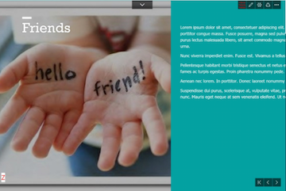
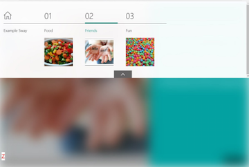
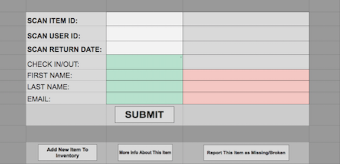

This summer I am working on LinkedIn's Marketing Solutions team, specifically on the Campaign Manager which handles ads for companies. My project for the summer will focus on quick company associations when creating a company ad, building both the API and frontend in both Ember.js and Play.
For the entirety of 2017, I was a lab leader for multiple computer laboratories each week for intermediate programming students in Data Structures. After meeting with other lab leaders once a week, I graded homework and provided individual assistance with class homework and projects during office hours
I interned in the Explorer Program which gave me the opportunity to "explore" both the Program Manager position and the Software Developer role. Surprising myself at the end of the summer, I ended up enjoying the dev position way more.
I worked on a team called Microsoft Sway which is part of the Office Suite. I like to initially compare it to Powerpoint, but it truly differs in many ways. After picking a template, Sway does all the design and layout for the user, creating a beautiful presentation or document immediately.
I was grouped with two other interns and we were tasked with improving the discoverability of the navigation feature (also known as the Table of Contents). If someone wanted to get through a long Sway, it was our job to make the Table of Contents easier to see and use. The first four weeks were spent as Program Managers designing how we would make the navigation feature more discoverable. This time included a lot of talking to designers, presenting ideas, adjusting to fit what the users wanted, etc. The last eight weeks were spent as developers programming the project in Typescript and C#.
We implemented the functionality for the pull-down button at the top of the left photo and the Table of Contents bar at the top of the screen on the right photo.
 A brief list of some things I learned:
To see a better visual of my summer, check this presentation out.
Two summers ago I worked at the Center for Engineering Education and Outreach (CEEO) where I learned about:
For my first project of the summer, I was tasked with making an inventory system for the lab. I used Google Spreadsheet's powerful tool, the Script Editor, to create this project. I learned Javacript while creating it and learned that Google has some neat built-in functions.
Here is a look at the interface. See more about it on Github.
Later on in the summer, I worked with the GrovePi (while my partner worked with the EV3) and the idea of the Internet of Things. The purpose was to take physical inputs to produce virtual outputs with the devices, and vice versa. One example I created posted tweets when a button was pressed on the GrovePi. Another small project I worked livestreamed all the current tweets and a light sensor would flash when a specific hashtag appeared.
For a better visual, watch my youtube video. Check out my code on Github.